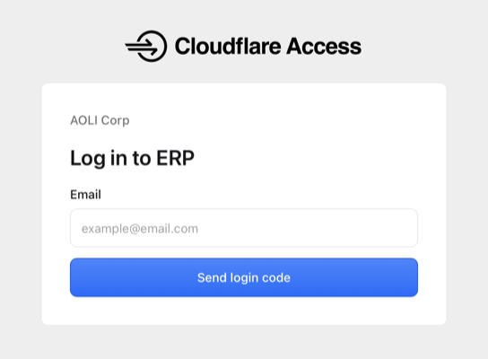
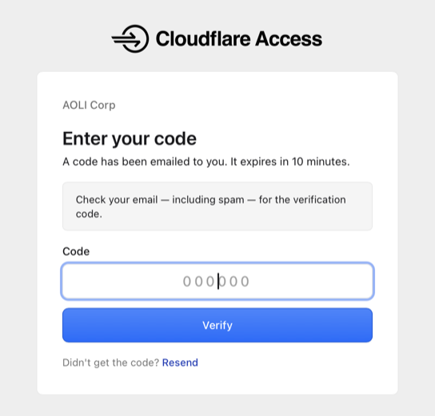

ERP
ERP 登录指南
现在可以直接用浏览器访问 ERP，不需要再连接公司内网。
登录步骤
- 打开 erp.ao-li.com
- 输入你的公司邮箱地址
-
点击 Send login code

- 打开公司邮箱，查收验证码邮件
-
把验证码填入登录页面，点击 Verify

- 页面会自动跳转到 ERP，按平时的方式登录 ERP 即可
登录过程中地址栏会变成 aoli.cloudflareaccess.com，这是正常的验证页面，验证通过后会自动回到 ERP。
验证码 10 分钟内有效，且只能使用一次。重新获取验证码后，之前收到的验证码会立即失效，请使用最新收到的那一条。
收不到验证码？
- 确认填写的是公司邮箱（@hw-etech.com.cn），个人邮箱无法登录
- 检查邮箱的「垃圾邮件」「广告邮件」文件夹
- 等待 1 分钟后重新获取验证码
注意事项
- 验证码等同于你的账号密码，不要转发或告诉任何人
- 公共电脑上使用完请退出登录并关闭浏览器
ERP 地址：erp.ao-li.com